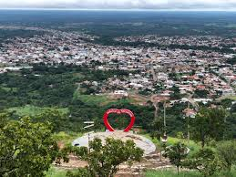

Tocantins, na Região Norte, tem cerca de 1,5 milhão de habitantes e 139 municípios, com Palmas como capital. Governado por Wanderlei Barbosa, o estado tem crescimento econômico impulsionado por indústria e serviços, além de gerar empregos. Também investe em projetos de sustentabilidade, como créditos de carbono, para atrair mais investimentos.
